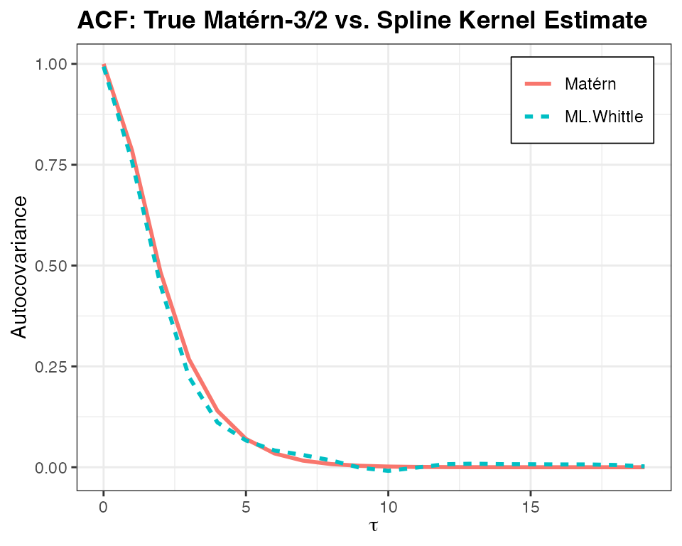

ML with Whittle Likelihood
ml_whittle.RmdWe now provide a simple example of fitting an ACF to simulated time-series data by maximising Whittle’s likelihood, a pseudo-likelihood that approximates the Gaussian likelihood in the Fourier domain. As discussed in the paper, this is particularly natural in fitting the spline kernels.
As before, we simulate a stationary Gaussian process with a known
Matérn-3/2 auto-covariance structure, and as again, we fit an
auto-covariance model using the bskernel package, assuming
linear (\(k=1\)) B-spline spectral
basis.
To use Whittle’s likelihood, we require regularly sampled data, and
so it is natural to use Toeplitz methods to speed up simulation. In what
follows, I call the occasional function from speccy, this
is some of my other software designed to handle a bunch of
spectral/Fourier methods.
Simulate a Gaussian process with known autocovariance
Most of this is standard; we lean on the package
SuperGauss to efficiently sample the GP and set
fft = FALSE so that this sample is an exact draw. We then
calculate the periodogram, note it’s values are double here as we are
only going to consider the folded periodogram in the positive
frequencies, and we drop the 0th frequency element as it does behave
well with Whittle’s likelihood.
library(bskernel)
library(dplyr)
library(SuperGauss)
library(speccy)
matern32_cov <- function(d, range, sigma2) {
sqrt3_d <- sqrt(3) * d / range
sigma2 * (1 + sqrt3_d) * exp(-sqrt3_d)
}
n <- 2000
n_knots <- 4
range <- 2
k <- 1
b <- 0.1
tau <- 0:(n - 1)
mat32_acf <- matern32_cov(tau, range, sigma2 = 1)
y <- SuperGauss::rnormtz(n = 1, mat32_acf, fft = FALSE)
I <- 2 * speccy::periodogram(y)$estimate[-1]
omegas <- speccy::periodogram(y)$ff[-1]Estimate the ACF using Whittle’s likelihood
This runs similar as the Gaussian likelihood case, except, now, we are optimising the bases in the Fourier domain directly. The only potentially odd thing to note about this is how the basis matrix is formed, effectively, I’m folding the negative frequencies into the positive, and then we are going to fit to the positive frequencies.
knots <- c(-0.05, 0, 0.05, 0.1, 0.2, 0.3, 0.5, 0.7)
c_init <- c(0.3, 0.2, 0.15, 0.15, 0.1, 0.1)
B_pos <- build_bspline_design_matrix(omegas, knots = knots, k = k)
B_neg <- build_bspline_design_matrix(-omegas, knots = knots, k = k)
B <- B_pos + B_neg
c_whittle <- optim_whittle(omegas, I, B, c0 = c_init)$c
acf_est <- Re(reconstruct_acf(c_whittle, knots, k, tau))